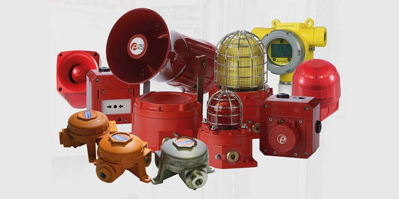

Fire and Gas Systems
Bir çoxumuzun iş elanlarında gördüyü məhşur F&G Systems. Nədir bu F&G? Fire and Gas System olaraq ifadə edilir, ümumi məqsədi isə müəssisələri yanğın və bənzəri hadislərdən qorumaqdır.
Hansı tiplərini görə bilərik və ya bu sistem ümumiyyətlə nədən ibarətdir ? Fərqli tiplərdə dedektorlardan, qaz analizatorlarından , sirenlərdən, modullardan , nasoslardan, klapanlardan, fərqli tipdə işlədicilərdən və bəzəndə SCADA'dan ibarət olur. Dedektorlar istilik, tüstü, kombinə olunmuş və s. tiplərə bölünür. Tipinə görə bu dedektorlar adətən adresli və adressiz olur. Adresli dedektorlar Modbus RS-485 komunikasiya yöntəmi ilə əlaqə qurur və hər bir dedektor əvvəlcədən əlavə cihazla adreslənir. Digər bəsit variantlarda isə məntiq elektrik dövrəsinin tamamlanması və ya quru kontaktla işləyir.
Aşağıda səbəblərə görə bu dedektorlara mütəmadiyən nəzarət edilir, lazım olduqca dəişilir və ya təmizlənir:
- Tozlanma: Forklift və bənzəri vasitələrin yaratdığı tozlar, istehsalat zamanı yaranan tozlar
- Yanlış alarmlar: Su buxarı, aparılan kiçik təmirlərdən gələn yanıq qoxuları
- Nasazlıq: zamanla və ya xarici təsirlərdən(yağış suları, qısa qapanma)
Azərbaycanda istifadı olunan ən məhşur markalar Rubezh və Qranit'dir. Bu sistemləri quraşdırmaq istəyən şəxslər xüsusi olaraq 2 fərqli nazirlikdə qeydiyatdan keçməli və sertifikat almalıdır.